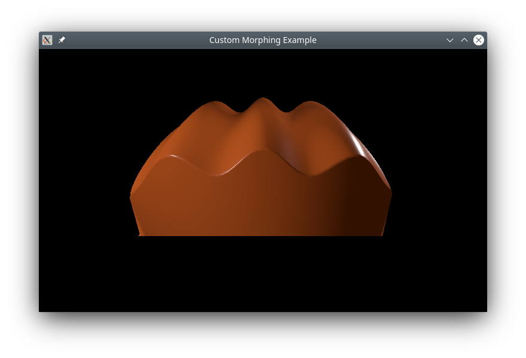
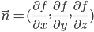

Qt Quick 3D - Custom Morphing Animation
Demonstrates writing C++ custom geometry with a morph target.

This example shows how to define a complex custom geometry in C++ that contains a base shape and a morph target, with normal vectors for both.
Custom geometry
The main part of this example is creating a custom geometry with a morph target. We do this by subclassing QQuick3DGeometry:
class MorphGeometry : public QQuick3DGeometry { Q_OBJECT QML_NAMED_ELEMENT(MorphGeometry) Q_PROPERTY(int gridSize READ gridSize WRITE setGridSize NOTIFY gridSizeChanged) public: MorphGeometry(QQuick3DObject *parent = nullptr); int gridSize() { return m_gridSize; } void setGridSize(int gridSize); signals: void gridSizeChanged(); private: void calculateGeometry(); void updateData(); QList<QVector3D> m_positions; QList<QVector3D> m_normals; QList<QVector4D> m_colors; QList<QVector3D> m_targetPositions; QList<QVector3D> m_targetNormals; QList<QVector4D> m_targetColors; QList<quint32> m_indexes; QByteArray m_vertexBuffer; QByteArray m_indexBuffer; QByteArray m_targetBuffer; int m_gridSize = 50; QVector3D boundsMin; QVector3D boundsMax; };
The constructor defines the layout of the mesh data:
MorphGeometry::MorphGeometry(QQuick3DObject *parent) : QQuick3DGeometry(parent) { updateData(); }
The function updateData performs the actual uploading of the mesh geometry:
void MorphGeometry::updateData() { clear(); calculateGeometry(); addAttribute(QQuick3DGeometry::Attribute::PositionSemantic, 0, QQuick3DGeometry::Attribute::ComponentType::F32Type); addAttribute(QQuick3DGeometry::Attribute::NormalSemantic, 3 * sizeof(float), QQuick3DGeometry::Attribute::ComponentType::F32Type); addAttribute(QQuick3DGeometry::Attribute::ColorSemantic, 6 * sizeof(float), QQuick3DGeometry::Attribute::ComponentType::F32Type); addTargetAttribute(0, QQuick3DGeometry::Attribute::PositionSemantic, 0); addTargetAttribute(0, QQuick3DGeometry::Attribute::NormalSemantic, m_targetPositions.size() * sizeof(float) * 3); addTargetAttribute(0, QQuick3DGeometry::Attribute::ColorSemantic, m_targetPositions.size() * sizeof(float) * 3 + m_targetNormals.size() * sizeof(float) * 3); addAttribute(QQuick3DGeometry::Attribute::IndexSemantic, 0, QQuick3DGeometry::Attribute::ComponentType::U32Type); const int numVertexes = m_positions.size(); m_vertexBuffer.resize(numVertexes * sizeof(Vertex)); Vertex *vert = reinterpret_cast<Vertex *>(m_vertexBuffer.data()); for (int i = 0; i < numVertexes; ++i) { Vertex &v = vert[i]; v.position = m_positions[i]; v.normal = m_normals[i]; v.color = m_colors[i]; } m_targetBuffer.append(QByteArray(reinterpret_cast<char *>(m_targetPositions.data()), m_targetPositions.size() * sizeof(QVector3D))); m_targetBuffer.append(QByteArray(reinterpret_cast<char *>(m_targetNormals.data()), m_targetNormals.size() * sizeof(QVector3D))); m_targetBuffer.append(QByteArray(reinterpret_cast<char *>(m_targetColors.data()), m_targetColors.size() * sizeof(QVector4D))); setStride(sizeof(Vertex)); setVertexData(m_vertexBuffer); setTargetData(m_targetBuffer); setPrimitiveType(QQuick3DGeometry::PrimitiveType::Triangles); setBounds(boundsMin, boundsMax); m_indexBuffer = QByteArray(reinterpret_cast<char *>(m_indexes.data()), m_indexes.size() * sizeof(quint32)); setIndexData(m_indexBuffer); }
We call updateData from the constructor, and when a property has changed.
The function calculateGeometry contains all the tedious mathematics to calculate the shapes and normal vectors. It is specific to this example, and the code will not be explained in detail. In general: to implement smooth shading, it's necessary to calculate the normal vector for each vertex. Mathematically, the normal vector can be calculated from the partial derivatives of the function describing the plane:

In this example, we make it simple by using a cosine wave for the base shape, knowing that its derivative is a sine function.
In practice, normal vectors can often be determined by geometric reasoning. For the morph target, we use the fact that any vector from the center of a sphere to the surface will be normal to the sphere at that point. Note that normal vectors in QtQuick3D must have unit length, which can be done by using QVector3D::normalized().
QML part
We define a morph target that corresponds to the one we created in the custom geometry, and do an animation on the weight, so it will cycle between the two shapes:
MorphTarget { id: morphtarget attributes: MorphTarget.Position | MorphTarget.Normal | MorphTarget.Color SequentialAnimation on weight { PauseAnimation { duration: 1000 } NumberAnimation { from: 0; to: 1; duration: 4000 } PauseAnimation { duration: 1000 } NumberAnimation { from: 1; to: 0; duration: 4000 } loops: Animation.Infinite } }
Finally, we create a model using our custom geometry, and apply the morph target to it:
Model { y: -1 geometry: MorphGeometry {} morphTargets: [ morphtarget ] materials: [ material ] }
Files:
- custommorphing/CMakeLists.txt
- custommorphing/Example/custommorphing_qml_module_dir_map.qrc
- custommorphing/Example/main.qml
- custommorphing/Example/qmldir
- custommorphing/custommorphing.pro
- custommorphing/main.cpp
- custommorphing/main.qml
- custommorphing/morphgeometry.cpp
- custommorphing/morphgeometry.h
- custommorphing/qml.qrc